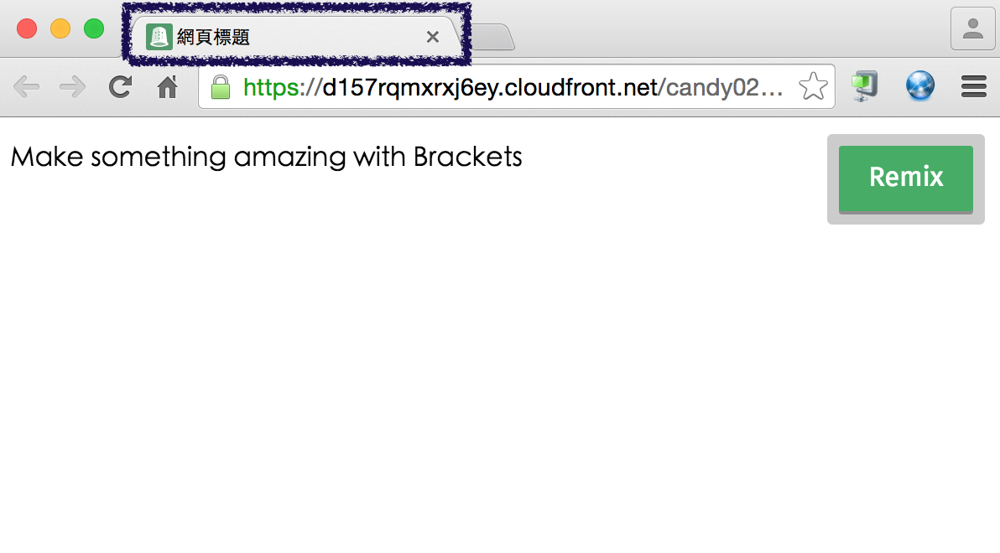

網頁排版（資料來源）

蔡智晴
工具使用、HTML
講師：蔡智晴 / Candy Tsai
See the Pen Example 1 by Candy (@stringpiggy) on CodePen.
<strong>我們要強調的文字，通常以粗體呈現</strong><p>我們應該要<strong>快樂</strong>地學習</p>
我們應該要快樂地學習
<p>我們應該要<strong>快樂</strong>地學習</p>我們應該要快樂地學習
<標籤名 屬性1="值1" 屬性2="值2">內容</標籤名><!DOCTYPE html> 告訴瀏覽器這是一份 HTML文件<html><head>描述網頁用的資料 Metadata</head><body>實際顯示在畫面中的網頁內容</body></html>
<!DOCTYPE html><html><head></head><body></body></html>
<head><title>網頁標題</title></head>
h1 標題一最大，而最小為 h6 標題六
<body><h1>標題一</h1></body>
<body><p>代表一個段落</p></body>
基本上，現在的瀏覽器都很聰明，故通常可以正確地自動判斷。但偶爾還是會出錯，所以我們可以在 head 元素裡加上：
<head><meta charset="utf-8"></head>
See the Pen Example 2 by Candy (@stringpiggy) on CodePen.
首先我們來觀察一個網頁大致上會用到哪些標籤
網址：點我來傳送！
利用<a>建立超連結。標籤屬性 href 的值代表要連結的網址，內文代表要顯示在畫面上的文字。
如果要用新分頁開啟則再加上 target 屬性，而值則輸入 _blank
Yahoo!奇摩<a href="連結網址">文字、圖片</a><a href="連結網址" target="_blank">文字、圖片</a>
利用<img>標籤加入圖片。屬性 src 代表欲顯示的圖片所在位址(URL)。
這是一個不需要內文的標籤。
<img src="網址" alt="圖壞掉時顯示的字" (width="寬" height="高")>
<iframe src="網址"></iframe>
See the Pen Example 3 by Candy (@stringpiggy) on CodePen.
通常如檔案在相同伺服器上，則會使用相對路徑，而如果要連結外部網址才會使用絕對路徑。
<img src="images/image.png"><img src="http://www.w3schools.com/images/h_logo.gif">
通常如檔案在相同伺服器上，則會使用相對路徑，而如果要連結外部網址才會使用絕對路徑。
<strong>重點文字、預設為粗體</strong><em>強調文字、預設為斜體</em>
strong:重點
em:強調
通常如檔案在相同伺服器上，則會使用相對路徑，而如果要連結外部網址才會使用絕對路徑。
<hr><hr size="寬度" color="顏色" width="長度" align="水平線對齊方向"><hr size="2px" color="blue" width="50%" align="right">
第三行範例
清單元素裡每一個項目都要用<li></li>來包起來
<ol><li>項目1</li><li>項目2</li></ol>
當<li>裡輸入 value 屬性時，可調整順序
<ol><li value="20">項目20</li><li>項目21</li></ol>
清單元素裡每一個項目都要用<li></li>來包起來
<ul><li>項目</li><li>項目</li></ul>
具有縮排效果
<dl><dt>項目標題</dt><dd>項目描述</dd></dl>
See the Pen Example 4 by Candy (@stringpiggy) on CodePen.
練習時間：10～15 min
記得到課程網站繳交網址唷
用<tr>建立一個列 (Table Row)，<tr>必須被包在<table>標籤中
<td>：資料欄 (Table Data)；<th>：標頭 (Table Header)
<table><tr><th>標頭</th><td>內容</td></tr></table>
See the Pen Example 5 by Candy (@stringpiggy) on CodePen.
學會基礎之後，就要講求效率～
大部分的元素都有的屬性
<a href="#id名稱">超連結</a>
大部分的元素都有的屬性
<h2 title="文字">OOO</h2><h2 style="CSS的東東">OOO</h2>
可以的話，盡量放一張自己的照片
練習時間：10～15分鐘，等教完 css 再繼續完成
See the Pen Example 08 by Candy (@stringpiggy) on CodePen.
如只看文字上的意思，很容易造成濫用：常見錯誤（英）
通則為，如果單純想要把元素框起來做美化，選用 div 或 span 會是比較和規格的
See the Pen Example 09 by Candy (@stringpiggy) on CodePen.
<label>欄位名稱<input type="輸入種類" name="名稱" placeholder="預設內容"><input type="text" name="name" placeholder="輸入姓名"></label>
<label for="辨識ID">欄位名稱</label><input type="" name="" id="" placeholder=""><input type="text" name="name" id="name1" value="輸入姓名">
See the Pen Example 06 by Candy (@stringpiggy) on CodePen.
<select name="選單名稱"><option value="真正有用的值">給使用者看</option><option value="真正有用的值">給使用者看</option><option value="OO" selected>我是新預設</option></select>
See the Pen Example 6 by Candy (@stringpiggy) on CodePen.
<textarea>這是一個多行文字的輸入框</textarea><textarea rows="高度" cols="寬度">多行文字的輸入框</textarea><textarea rows="10" cols="20">多行文字的輸入框</textarea><textarea style="resize:none">多行文字的輸入框</textarea>
這個不用上傳，目的只是要讓大家熟悉表單裡面的內容物
不能用數字開頭唷！
<html>, <body>, <head>, <title>, <link>, <script>, <style>, <a>, <br>, <button>, <div>, <h1> ~ <h6>, <ul>, <ol>, <li>, <img>, <input>, <p>, <span>, <textarea>, <iframe>
<p><div>HI!</div></p>
一般來說 mp3、mp4、wav 都可以放，會根據瀏覽器的不同而支援不同的格式，長的也會不一樣
<audio src="http://www.w3schools.com/html/horse.mp3"controls>瀏覽器不支援 audio</audio>
如果想要自動播放還可以加入 autoplay 的屬性，也可以設定 width 跟 height
<video src="http://www.w3schools.com/html/mov_bbb.mp4"controls autoplay>瀏覽器不支援 video</video>
viewport 會告訴瀏覽器，目前使用的裝置多寬(或多高)，當作縮放時的基準
<head>
<meta name="viewport" content="width=device-width, initial-scale=1.0">
</head>
這一樣也是放在head裡面
<!--[if lt IE 9]>
<script src="//html5shiv.googlecode.com/svn/trunk/html5.js"></script>
<![endif]-->